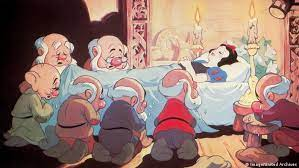

Następnego dnia na lekcji PAIn Killer di Pablo Escobar podał sorowi jabłko na początku odmówił ale po dłuższej chwili namyślenia sor przyjął jabłko i ugryzł kawałek, lecz sor nie wiedział że jabłko ma w sobie zawartego Tigera w postaci tabletki (którą połknął z jabłkiem). Gdy tabletka dostała się do żołądka wywołało to w jego organizmie szok i nasz sor zapadł w sen zimowy.
